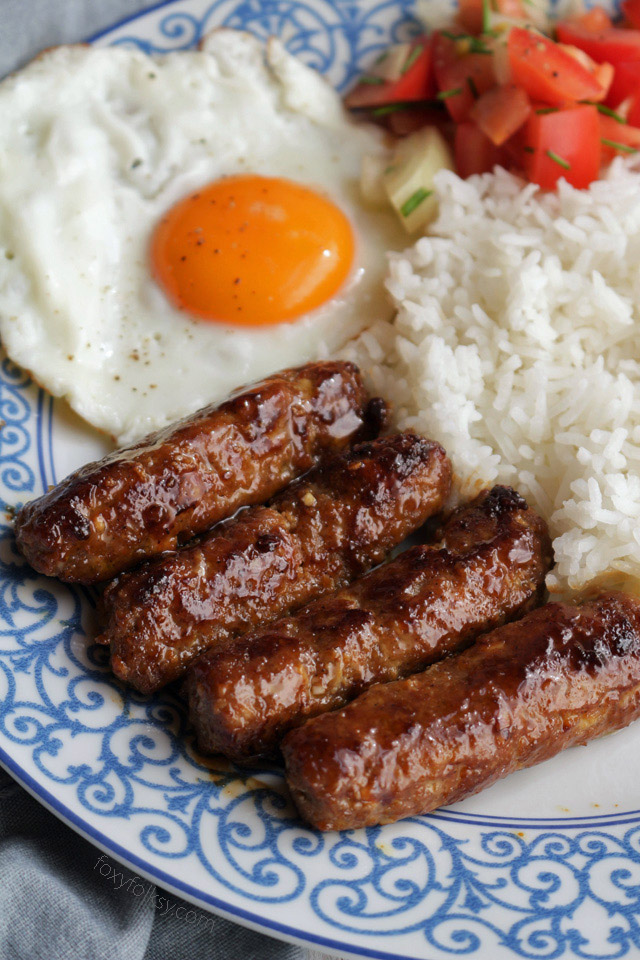

Longanisa

A Breakfast Staple
Longanisa is a sweet and savoury sausage that is best paired with fried eggs and garlic rice. It could be stuffed in a sausage casing or simply moulded into your preferred shape, ready to be fried.
Ingredients
- 1lb ground pork
- 10 tbsp brown sugar
- 6 tbsp pineapple juice
- 2 tbsp cornstarch
- 2 tbsp oyster sauce
- 2 tsp salt
- 2 tsp paprika
- 1 tsp MSG (optional)
- 1 tsp black pepper
- 1 head chopped garlic
Steps
- Finely mince 1 head of garlic.
- Place 1 lb of ground pork in a bowl, add dry ingredients, and minced garlic.
- Mix ground pork until spices and garlic are incorporated.
- Add wet ingredients and mix until incorporated.
- Form the longanisa into your desired shape and size. The traditional way is to form them into sausage links, but burger patties also work well.
- Place pan on stove and heat over a medium flame.
- Add preferred cooking oil and let pan heat.
- Add longanisa to pan, turning every 30 seconds until golden brown.
- Remove from pan and enjoy!
Home